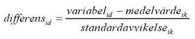
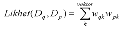
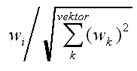
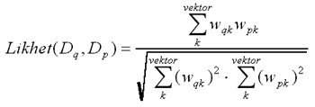
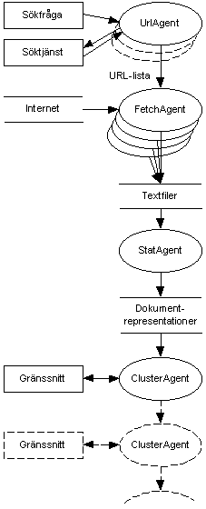

En prototyp för att klassificera dokument från WWW med avseende på genre och ämne
A Prototype for Classification of Documents from WWW, with regard to Genre and Content
Januari 1998
Johan Dewe
Sammanfattning
Traditionella söktjänster på World Wide Web (WWW) erbjuder mycket effektiva sökningar men presenterar resultaten som en enda lång lista med svarens inbördes ordning som enda stöd för användaren. Den här rapporten beskriver en prototyp som strukturerar och presenterar resultaten i flera dimensioner och på så sätt stöder användaren genom att erbjuda bättre överblick över sökresultaten.
Utgångspunkten är att grupper av dokument med liknande egenskaper erbjuder en viktig abstraktion. Prototypen försöker finna grupperingar längs två viktiga dimensioner: genre respektive ämne. För att genreklassificera dokument används maskininlärningsmetoder baserade på många enkla stilelement, och för att finna ämnesgrupperingar används traditionella klustringsmetoder baserade på ordstatistik.
En användardefinierad uppsättning genrer har använts som underlag till genreklassificeringen. Dessutom har en referensmängd (korpus) av dokument samlats in från Internet för att användas vid maskininlärningen.
Prototypen är implementerad och fullt funktionsduglig. Den fungerar som ett skal över vanliga sökmotorer och erbjuder visualisering av sökresultaten grupperade längs två huvudaxlar - genre och ämne.
Telia Research AB avser patentskydda systemet.
Abstract
User interfaces to WWW search engines typically present results as ranked lists of documents. Such lists give users little help in understanding document variation.
This report describes a prototype that, through stylistic genre-based document categorization and statistical content-based clustering, gives a richer representation of the retrieval results. Combined with an iterative investigation of the search results this will give the user a better overview of the different document groupings - content and genre - found in the search results.
A set of user-defined genres, adapted to the user's perception of genres, was established, and a Corpus was assembled, to be used in the genre classification algorithms. A fast two-step clustering algorithm was used to create the content-based document groupings.
Innehållsförteckning
- 1.1 Traditionella söktjänster erbjuder effektiva sökningar med dåliga användargränssnitt
1.2 Målsättning: En prototyp för att testa visualisering av genreklassificerade sökresultat
1.3 Egenskaperna ämne och genre och särskiljer en grupp dokument
1.4 Översikt över DropJaw
- 2.1 Genrer och principen för genreklassificering
2.2 Komponera en uppsättning genrer - en genrekollektion
2.3 Skapa en referensmängd av dokument - en korpus
2.4 Automatiserad analys och klassificering
- 3.1 Klustringsmetoder söker naturliga grupperingar
3.2 Klustring i DropJaw - fokus på snabb bearbetning
3.3 Nyckelord beskriver ämnesklusters innehåll
- 4.1 Från idé till lösning - med hopp om data från AltaVista
4.2 Dokumentrepresentationen är det mest centrala objektet i systemet
4.3 Systemets olika komponenter - prototypens ryggrad
4.4 Möjligheter och förbättringar
5 Slutord
Förord
Jag har gjort examensarbetet under våren och sommaren 1997 vid institutionen NADA, KTH, på uppdrag av Telia Research AB. Min Handledare på Telia, initiativtagare till examensarbetet är Ivan Bretan. Ytterligare handledare är Jussi Karlgren vid Swedish Institute of Computer Science, SICS. Examensarbetet har varit en del i ett projekt med arbetsnamnet DropJaw med mål att skapa en prototyp för visualisering av sökningar på Internet. Projektgruppen består förutom av Ivan och Jussi dessutom av mig och teknologen Anders Hallberg från KTH, samt blivande industridesignern Niklas Wolkert som studerar interaktiv design vid Designhögskolan i Umeå.
Projektet DropJaw har genomförts hela vägen från idéskiss till prototyp, genom alla steg i utvecklingen inkluderande interaktionsdesign, systemdesign, systemarkitektur, kommunikation, operativsystem etc. Roligt och viktigt har varit kopplingen till min inriktning under utbildningen - Intelligenta Interaktiva System - som innefattar människa-datorinteraktion såväl som artificiell intelligens och maskininlärning. Dessutom har projektet krävt och erbjudit tvärvetenskapligt arbete med användaren i fokus, vilket har varit otroligt givande.
Jag vill passa på att framföra tack till alla inblandade, särskilt Ivan och Jussi för bra stöd och handledning. Jag har fått nya kunskaper och erfarenheter som jag aldrig hade fått utan DropJaw-projektet.
Rapportens uppläggning
Min del i projektet kallas Chunkify och är en modul som söker, hämtar och strukturerar dokument från Internet. Jag har haft fokus på metoder och algoritmer för genreklassificering och ämnesklustring, vilket även avspeglas i den här rapporten. Rapporten inleds med ett kapitel som är avsedd att ge bakgrund, problemställning och avstamp till resten av rapporten. Större delen av rapporten, kapitel 1 och 1, handlar om metoder och algoritmer för genreklassificering och ämnesklustring. Sist kommer en mindre del om systemets arkitektur och implementering.
1 Inledning
Kapitlet syftar till att ge en överblick över problemställning, förutsättningar och målsättning. Därefter presenteras några centrala begrepp - ämne, genre och grupp - som ligger till grund för systemet. Slutligen ges en kort presentation av prototypens olika delar och dess gränssnitt.
Detta kapitel behandlar arbete som är gemensamt med Anders Hallbergs examensarbete [Hallberg 1998]. När jag använder termen "vi" i det här kapitlet syftar jag följaktligen på mig själv tillsammans med Anders Hallberg.
1.1 Traditionella söktjänster erbjuder effektiva sökningar med dåliga användargränssnitt
Vi har fokuserat på ett problem med de traditionella söktjänsterna på Internet och World Wide Web (WWW). Dessa söktjänster ger mycket effektiva sökningar med många träffar, men presenterar sedan svaret som en enda lång lista med svarens inbördes ordning som enda stöd för användaren. Ordningen är vanligtvis baserad på hur bra söktjänsten antar att dokumentet passar till sökfrågan. I situationer där tusentals träffar erbjuds som svar till en sökning är det svårt att skapa sig en överblick - för det första ges bara en linjär presentation av resultaten och för det andra delas resultaten upp över flera sidor.
Undersökningar har visat att användarna har låg "mättnadströskel" - de inspekterar långt ifrån hela sökresultatet. En typisk användare inspekterar högst ett tiotal träffar för att sedan tröttna och utföra en ny sökning med modifierad sökfråga som bättre passar användarens förväntningar. Ofta blir sökfrågan till slut alltför smal och begränsande, sökresultatet för litet, och de intressanta dokumenten har försvunnit bortom "mättnadshorisonten". Hur kan man hjälpa användaren att finna intressanta dokument som ligger långt ned i listan?
Ytterligare en sak vi har tagit fasta på är att dokument har fler egenskaper än de som kan fångas genom att endast titta på vilka ord som finns i dokumentet. Ren ordräkning används av traditionella söktjänster och avser att spegla dokumentens innehåll, men dokumentens representation blir då mycket fattig. Ett dokument är så mycket mer än bara alla dess ord: det är skapat för ett visst syfte och publicerat i ett sammanhang; det är skapat av en viss författare och är skrivet i en viss stil; det har en grafisk eller strukturell form. Alla dessa egenskaper kan användas för att skapa en rikare representation av dokumenten, en dimension vi kallar dokumentets genre eller typ. Om man ger sig tid att inspektera ett stort sökresultat kommer man att finna grupper av dokument som handlar om samma sak, men samtidigt andra grupperingar där dokumenten är av samma typ: man hittar hemsidor; man hittar kommersiella sidor som försöker sälja någon vara; man hittar noveller; man hittar tips om olika saker. Hur skall man dra nytta av detta faktum för att hjälpa användarna att finna det de söker?
1.1.1 Strategier för att hjälpa användaren
Det finns två principiellt olika sätt att angripa problemet att hitta rätt dokument:
- Presentera färre träffar med högre precision så att användaren inte får lika mycket information att överblicka. Högre precision kan uppnås genom någon form av aktiv sökhjälp, till exempel en agent som lär sig vad användaren är intresserad av.
- Presentera hela sökresultatet men stöd användaren i tolkning och navigering. Strukturera informationen så att det är möjligt att få överblick och förutsättning att finna det man söker.
Vi har valt att det andra alternativet. Utnyttja kunskaper om människa-datorinteraktion och visualisering av data, samt metoder från informationssökning, lingvistik och artificiell intelligens, för att visualisera informationsmängden på en högre nivå. Ge användaren överblick över en informationsmängd där dokumenten är sorterade och grupperade efter olika dimensioner - rita en karta över informationen.
1.2 Målsättning: en prototyp för att testa visualisering av genreklassificerade sökresultat
Målsättningen med DropJaw-projektet var att skapa en fullt fungerande prototyp för att visa att idéerna runt visualisering av genreklassificerade sökresultat fungerar. En sådan prototyp bör utföra riktiga sökningar direkt på Internet istället för fördefinierade "fusksökningar". Dessutom bör prototypens gränssnitt innehålla all nödvändig funktionalitet, och självklart skall programmet vara stabilt och robust.
När vi inledde projektet, innan vi fördjupade oss i detaljer, satte vi upp några förutsättningar för prototypens utformning:
- Ge användaren överblick över dokumentmängden genom att visualisera sökresultatet, baserat på vedertagna teorier för visualisering.
- Strukturera informationen för att stödja visualiseringen: klassificera dokumentmängden med avseende på dokumentens innehåll och dokumentens genre.
- Stöd iterativt sökbeteende [Shneiderman 1997], dvs ge användaren möjlighet att iterativt bearbeta sökresultatet tills det är tillräckligt bra.
- Ge användaren en känsla av kontroll genom hela processen. Det skall finnas möjlighet att bryta processen, att fortsätta söka vidare, granska dokument etc oberoende av vad prototypen utför i bakgrunden. Hämtning och bearbetning av dokument skall utföras transparent och så fort som möjligt för att minimera väntetider.
- Ge prototypen ett smakfullt, estetiskt tilltalande, annorlunda gränssnitt - det skall kännas att det är nytt och fräscht. Kombinationen av visualisering och strukturering av dokumentmängden är helt ny, det skall även återspeglas i gränssnittet.
- Utveckla programmet i tvärdisciplinär miljö med datateknik, grafisk design, beteendevetenskap och lingvistik.
1.3 Egenskaperna ämne och genre och särskiljer en grupp dokument
Som nämnts ovan avser vi åskådliggöra två olika egenskaper hos dokumenten: dess ämne, dvs vad dokumentet handlar om, och dess genre (eller typ) vilken beror av dokumentets form och kommunicerande funktion.
Ett exempel: man ställer sökfrågan "camel" när man önskar information om kameler. I sökresultatet hittar man dokument rörande olika ämnen: kameler och dromedarer, cigaretter, skor och klockor, off-road-tävlingen Camel Trophy. Å andra sidan finns det för varje ämnesområde återkommande genrer: hemsidor om Camel Trophy såväl som hemsidor om kameler i öknen. Journalistisk text om cigaretter såväl som journalistisk text om kameler. Länksamlingar rörande varje tänkbart ämnesområde. Listan på genrer som återkommer i de flesta ämnesområden kan göras lång.
Figur 1: En tidig skiss på relation mellan ämne, genre och grupp
Men vilken egenskap är viktigast, vilken egenskap vill man först gruppera sina dokument efter? Bör man först välja ämnesområde för att därefter bestämma sig för vilken genre som verkar intressant, eller bör man först fundera på genre ("Jag vill leta efter tidningsartiklar!") för att sedan ta ställning till vilken gruppering som verkar innehålla rätt ämne? Båda alternativen delar samma nackdel: om en egenskap får förtur blir informationen svår att överblicka. Vi har därför valt att visa båda egenskaperna samtidigt i en matris längs var sin axel:
- Kolumnvis visas genrer. De har fasta beskrivningar och är alltid placerade på samma plats, de avser att tillsammans ge ett tvärsnitt av de dokument som kan komma som resultat av en sökning. Om en sökning inte resulterar i några dokument för en viss genre kommer motsvarande kolumn att vara tom.
- Radvis visas ämnen. De är dynamiskt beskrivna eftersom innehållet i dokumenten styrs av sökresultatet. Varje rad motsvarar en mängd dokument som liknar varandra. Innehållet beskrivs av ett antal nyckelord.
Där kolumn och rad möts bildas en grupp (Figur 1). En grupp kan vara "hemsidor om Camel Trophy", eller "länksamlingar om kameler", eller kanske "vetenskapliga rapporter om farliga cigaretter av märket Camel". Varje dokument i sökresultatet tilldelas en genre och ett ämne, och hamnar därför i en viss grupp.
1.4 Översikt över DropJaw
DropJaw består av två huvuddelar, vilka motsvarar arbetsfördelningen i projektet. Gränssnittsmodulen, kallad Easify, med all interaktion och visualisering är skapad av Anders Hallberg, med formgivning av Niklas Wolkert. Kommunikations- och struktureringsmodulen, kallad Chunkify, är skapad av Johan Dewe.
Figur 2: DropJaws två moduler.
Själva söktjänsten, som är en viktig del i DropJaw, ligger helt utanför systemet. Detta är en ömtålig lösning eftersom DropJaw är beroende av vissa nyckelelement i söktjänstens design. Om dessa element saknas kommer DropJaw inte kunna tolka svaret från sökmotorn - DropJaw ger sken av att ge resultat från sökningen.
1.4.1 Easify visualiserar och interagerar
En kort genomgång av gränssnittet Easifys olika delar (se Figur 3).
Sökningar initieras på samma sätt som med en vanlig WWW-baserad söktjänst. Knappar och textfält för sökning är placerade längst upp till vänster (A). När sökningen startats anländer dokument till systemet. De analyseras och börjar fylla gränssnittet med innehåll. Namn på genrer och kolumner hittar du vid (B) och nyckelorden som beskriver ämnet ligger längst till vänster på varje rad, vid (C). Dokumenten bildar grupper som visas som små bubblor eller droppar (E) placerade i motsvarande rad och kolumn. Under arbetet visas antal dokument som systemet behandlat vid (D).
Figur 3: Gränssnittet Easify under en sökning efter "grass +lawn +fertilizers" enligt samma syntax som AltaVista använder. 183 dokument har behandlats av systemet och några grupper ur genrerna "Journalistic" och "Other Texts" har markerats för vidare bearbetning.
Se även färgbild i full skala (270kB).
Grupper som verkar intressanta samlas med musen ihop i ett fält (F) för att användas i nästa steg. När användaren har valt klart kan han omgruppera de valda grupperna genom att trycka på "Regroup". Då kommer nya tomma kolumner och rader upp på skärmen; dokumenten i grupperna vid (F) analyseras och sprids ut på nytt. Eftersom mängden analyserade dokument är mindre än i förra grupperingen kommer ämnesgrupperingarna att vara mer specifika.
Användaren är fri att göra så många omgrupperingar som behövs - målet är "zooma in" tillräckligt nära för att finna det man söker. Om resultatet av en omgruppering blir för snävt, eller verkar vara fel, kan man backa ett eller flera steg till ett bättre utgångsläge och sedan göra ny omgruppering.
1.4.2 Chunkify skapar grupperingarna
Genre: Chunkify försöker med hjälp av språkvetenskapliga och statistiska metoder och metoder från området artificiell intelligens bestämma varje dokuments genre. Detta kan göras genom att kombinera enkla mått, till exempel ordlängd eller förekomst av vissa ordtyper i kombination med maskininlärning. Liknande metoder har tidigare använts för att bestämma författare eller för att avgöra en texts läsbarhet.
Ämne: För att skapa ovan nämnda ämnesgrupperingar tillämpar modulen Chunkify metoder som använts vid informationssökning och strukturering av information, så kallad klustring. Baserat på ett mått på dokumentens inbördes likhet skapar Chunkify grupperingar - kluster - med dokument som till innehållet liknar varandra, dvs behandlar samma ämne. Varje ämnesgruppering beskrivs av ett antal nyckelord som består av de mest centrala orden i respektive gruppering.
1.4.3 Easify och Chunkify beskrivs i två olika rapporter
Dropjaw-projektet finns beskrivet i två examensarbetesrapporter. En mer ingående studie som ligger till grund för Easifys interaktion och utformning finns i Anders Hallbergs rapport [Hallberg 1998]. Resten av den här rapporten fokuserar på komponenten Chunkify och metoder för att skapa dokumentmängdens underliggande struktur.
2 Genreklassificering
I det här kapitlet beskriver jag genreklassificering: komponenten som strukturerar dokumentmängden med avseende på dokumenttyp/genre. Första avsnittet ger en definition av begreppet genre och beskriver principen för genreklassificering. Därefter går jag igenom de två största arbetsmomenten som ligger till grund för genreklassificeringen: att hitta en lämplig kollektion av genrer, och att skapa en väl avvägd referensmängd dokument. Sista avsnittet beskriver hur genreklassificeringen utförs i DropJaw, från analys till maskininlärning.
Genreklassificeringsarbetet har jag gjort i främst samarbete med Jussi Karlgren. Det finns även beskrivet i [Dewe, Karlgren & Bretan 1998]. När jag använder termen "vi" syftar jag här på mig själv tillsammans med Jussi.
2.1 Genrer och principen för genreklassificering
Kommunikation, i text eller på annat sätt, har genom tiderna ofta indelats i kategorier efter sin ämne, form eller funktion, och det har gjorts många försök att definiera begreppet genre. En generell ansats har tagits av Wanda Orlikowski och JoAnne Yates [Orlikowski & Yates 1994a, 1994b] i deras studier av kommunikation inom organisationer. Deras definition av genre lyder:
"...a distinctive type of communicative action, characterized by a socially recognized communicative purpose and common aspects of form" [Orlikowski & Yates 1994a].
Ovanstående citat uttryckt med andra ord: kommunikationens form, det vill säga dess fysiska utformning och språkliga uttryck, tillsammans med dess (sociala) syfte definierar en genre. Vissa genrer definieras endast av dess form, t ex broschyr eller pocket; andra genrer endast av sitt syfte, t ex ett PM eller en offert. Vanligtvis brukar dock en genre definieras av en kombination av form och syfte, t ex ett dagstidning som har till syfte att förmedla nyheter i den karaktäristiska formen av många små artiklar. Observera att en genre inte enbart definieras av dess medium [Crowston & Williams 1997]. Till exempel kan ett PM skickas antingen som vanligt brev eller som e-brev.
Andra ord som fångar begreppet genre på ett lite mer intuitivt sätt är stil, och för textbaserade källor, texttyp. I det här arbetet fokuseras på textbaserade källor distribuerade via Internet och World Wide Web, WWW. Den centrala metaforen på WWW är dokumentet, som ibland också kallas "sida". WWW-dokument - som all text - varierar på många sätt. Den uppenbara variationen till ämne eller innehåll utnyttjas av traditionella söktjänster som en bas för deras kategorisering. Men dessutom kan man lätt finna en variation i funktionell stil vilket kan användas som en bas för kategorisering i en andra dimension. Prosa, vetenskaplig text, journalistisk text, poesi etc är exempel på texter med olika funktionell stil, dvs olika genrer.
2.1.1 Variationer i textens uttryck kan användas för att identifiera kända genrer
En texts genre kan avgöras genom att inspektera enkla stilmått. Dessa mått är observerbara variationer i textens uttryck, till exempel vilka ord som har valts för att uttrycka en mening eller hur komplext texten är uppbyggd. En mänsklig läsare tar automatiskt hänsyn till alla dessa egenskaper för att bedöma en texts genre, men dessa mått kan även vara till nytta vid en automatiserad klassificering.
Genom att mäta många enkla stilmått kan texter klassificeras efter genre [Karlgren & Cutting 1994]. Måtten kan ha olika karaktär: mått som räknar olika ordklassers förekomst och fördelning; mått som letar efter speciella ord eller uttryck; mått som mäter övergripande egenskaper hos texten, t ex genomsnittlig ordlängd, andel skiljetecken, ordrikedom/ordvariation och andel siffror. Varje mått fyller ensamt liten eller ingen funktion, men en stor uppsättning mått ger tillsammans ett medel för att bestämma en texts genre. Liknande metoder har tidigare använts för att mäta texters kvalitet och läsbarhet, och för att avgöra författarskap. Senare har metoderna även använts till informationssökning [Karlgren 1996].
Vissa nya mått blir tillgängliga när man använder dokument från Internet. Dessa mått utnyttjar den struktur som tillhandahålls genom HTML-formatet, till exempel andel HTML-ord, antal bilder, eller antal referenser till andra dokument, s k länkar.
Dessa stilmått är den grundläggande idén vid genreanalys, men för att skapa en fungerande automatiserad genreklassificering krävs framförallt två intimt förkippade huvuddelar: en väl avvägd uppsättning genrer samt en referensmängd dokument indelad i motsvarande kategorier.
En väl avvägd uppsättning genrer behövs till klassificeringen. Denna uppsättning genrer måste vara anpassad både till de stilmått som finns att tillgå samt till de olika dokument som kan förväntas behandlas i klassificeringen [Karlgren & Straszheim 1996]. Men vilka genrer finns på Internet? Finns det redan genrekollektioner att tillgå, går de i så fall att tillämpa i det här fallet? Vilka förväntningar har en användare på en uppsättning genrer?
För att skapa en automatiserad klassificering behövs en mängd dokument för att lära upp systemet. Denna mängd dokument används som referensmaterial när kunskap om de olika stilmåttens inbördes relationer skall byggas upp, och består av dokument indelade i kategorier som motsvarar genrerna i genrekollektionen.
Resten av det här kapitlet handlar främst om arbetet med genrekollektionen och referensmängden. Sist går jag in på algoritmerna och de specifika mått jag har använt till genreklassificeringen i DropJaw.
2.2 Komponera en uppsättning genrer - en genrekollektion
En kollektion av genrer måste vara anpassad för textmaterialet den skall användas för, i vårt fall dokument från World Wide Web, vilket innebär att tidigare existerande genrekollektioner inte kan tillämpas utan modifiering. Dessutom måste genrekollektionen anpassas för de stilmått som finns att tillgå: vissa önskvärda genrer kan vara omöjliga att urskilja med tillgängliga mått och måste därför utgå ur kollektionen.
Dessutom bör uppsättningen av genrer vara intuitiv, det vill säga lätt att förstå och tolka av en användare. Den skall stämma överens med etablerade uppfattningar om vilka typer av dokument som finns i databasen, dvs på Internet. Dessutom har World Wide Web och Internet har givit, och kommer fortsätta att ge, upphov till nya genrer - både genrer tagna och modifierade från tidigare textbaserade genrer samt helt nya genrer specifika för WWW [Crowston & Williams 1997].
Ytterligare krav på genrekollektionen är att den bör vara heltäckande: varje dokument skall kunna sättas in i en genre som passar. Följaktligen kommer krav på att kollektionen skall vara tillräckligt generell för att hantera oväntade dokument, till exempel dokument som fyller flera funktioner och därför kan sägas tillhöra mer än en genre. Helt nya typer av dokument kan också förväntas tillkomma.
Tidigare liknande ansatser att skapa en passande uppsättning genrer har främst förlitat sig på personliga uppfattningar och erfarenheter [Ben Cheikh & Zackrisson 1994, Hussain & Tzikas 1995] eller varit starkt anpassad till ett väldefinierat och väl kategoriserat källmaterial. Vår ansats är att nå längre: vår genrekollektion ska spegla användarnas uppfattning och samtidigt vara väl anpassad för automatiserad analys. Dessa kriterier kan i många fall vara motsägelsefulla. Genrer som är lätta att upptäcka i en automatiserad process kan sakna betydelse eller vara svåra att förstå för människor, men genrer som känns självklara och intuitiva för en människa kan vara svåra att urskilja med tillgängliga metoder. Vårt mål är att skapa en uppsättning genrer som så bra som möjligt uppfyller båda kriterierna.
2.2.1 Genrekollektionen är resultatet av ett samarbete
Figur 4: kategorier lämpliga för automatiserad analys finner vi i mötet mellan vagt formulerade uppfattningar (user interviews) och lätt observerbara stilmått (feature analysis).
Arbetet med att skapa en uppsättning genrer har delats mellan mig och Jussi i två principiella delar. En del syftar till att inhämta empiriska data och förstå användarnas behov; till denna del har vi använt frågeformulär med enstaka korta frågor, utskickat via e-post. Den andra delen syftar till att bestämma vilka stilmått som bör användas. Detta arbete baseras på tidigare arbete av Jussi Karlgren vilket tar avstamp i Douglas Bibers framsteg inom genreklassificering [Biber 1989, Karlgren & Cutting 1994]. Nya mått speciellt avpassade för World Wide Web har också tillkommit.
2.2.2 Hitta förslag till etablerade och nya genrer
För att finna förslag till nya och etablerade genrer valde vi att vända oss till en blandad mängd människor med tillgång till e-post. Vi skickade med ut två e-brev med några veckors mellanrum. Det första brevet syftade till att samla in förslag; det andra var en uppföljare som syftade till att kontrollera att vi var på rätt spår.
|
Hej, jag behöver din hjälp under två minuter. Inom ramen för mitt examensarbete tampas jag med problemet att "genre-klassificera" dokument som kommer från World Wide Web. Vad är en genre? En genre är en grupp av dokument som visar stora likheter i utformning. I tidningsvärlden kan man enkelt finna exempel på genrer. Vi hittar t ex vetenskapliga texter, noveller, nyhetsartiklar, annonser etc. I ett större perspektiv kan själva begreppet "tidning" ses som en egen genre, jämfört med tillexempel deckare, riksdagsprotokoll och elpostdiskussioner. På motsvarande sätt borde dokument från WWW kunna delas in i tydliga genrer. De enklaste genrerna listar jag själv ut ganska snabbt, men tyvärr blir det en ganska ensidig vy. Det är nu jag behöver din hjälp för att få lite större perspektiv: * Vilka genrer anser du att det finns på WWW? Fundera en minut och skriv sedan ner en lista på de genrer du kom att tänka på. Alla svar är av intresse! Tack för din hjälp. |
Figur 5: Den första frågan som skickades ut med e-post.
Med det första brevet ville vi skapa oss en bild av vilka typer av dokument som användare förväntar sig att hitta på WWW. Vi ville ha förslag till genrer och därför ställdes frågan: "Vilka genrer anser du att det finns på WWW?" (Figur 5). E-brevet skickades ut till 648 studenter, lärare och forskare vid Kungliga Tekniska Högskolan och Stockholms Universitet.
Vi fick 67 svar, dvs svarsfrekvens på lite drygt 10%, vilket vi är tillräckligt många svar för att ge oss en uppfattning om de vanligaste förväntningarna. Vi fick allt från väldigt korta svar till långa diskussioner eller hela hierarkier med genrer. Några exempel på svar hittar du i Figur 6.
|
Figur 6: Exempel på svar på frågan om vilka genrer som finns på WWW.
Det visade sig att många blandar ihop begreppen genre och ämne. Det är inte förvånande eftersom dimensionerna genre och ämne inte saknar inbördes relation [Karlgren & Cutting 1994], vilket visar sig i bibliotekens kategorisering som återspeglar båda dimensionerna samtidigt. Men vi tror att genrer är lätta att ta till sig och använda när man får dem presenterade, förutsatt att de beskrivs på ett konkret och intuitivt sätt.
Samtidigt fick vi svar som innehöll förslag på rena form/funktions-genrer: "hemsidor", "databaser", "FAQs", "söktjänster" och "referensmaterial", och andra svar refererade till genrer som existerar i pappersmediet. Ett flertal svar indikerade att man kan använda syftet med informationen som ett kriterium: "här är jag", "försäljningserbjudanden", "seriöst material", eller utgivaren som kriterium: "publik information", "kommersiell info", "organisationsinformation från myndighet". Ytterligare svar angav kvalitet som kriterium, t ex "tråkiga hemsidor", eller enbart fokus på funktion: "formulär" och "enkäter".
2.2.3 Genrekollektionen - en kompromiss mellan förväntningar och tillgänglig teknik
Målet med genrekollektionen är att skapa en uppsättning genrer som fångar de några av de uppfattningar vi fick genom svaren, nämligen de genrer som är tillräckligt lätta att förutsäga med våra tillgängliga mått och metoder. Vi vill hitta en god kompromiss mellan svaren - dvs de uppfattningarna - och tillgängliga stilmått. Denna uppgift är iterativ till sin natur och det kan därför vara svårt att hitta en bra jämvikt eftersom användarnas uppfattningar är vaga och otillräckligt uttryckta samtidigt som tillgängliga stilmått är klumpiga och trubbiga. Samtidigt innebär denna process att genrekollektionen skräddarsys för en viss användargrupp vilket gör den mindre generell.
|
Figur 7: Genrekollektionen.
Utgående från svaren skapade vi en genrekollektion (Figur 7). Observera att denna uppsättning genrer, trots att den har använts genom hela det här projektet, är en startpunkt för vidare forskning. Genrerna är baserade på empiriska data men ej tillräckligt verifierade; de kommer att delas upp eller slås ihop, nya genrer kommer att läggas till för att anpassa paletten till andra, bredare användargrupper.
Vissa genrer kan vid en första anblick te sig något underliga, till exempel "Error Messages" för felmeddelanden. Felmeddelanden är mycket lätta att upptäcka i en automatiserad klassificering, bland annat på grund av deras korta form, och passar därför alldeles utmärkt som en egen genre. Å andra sidan uppfattar inte användarna felmeddelande som en direkt genre. Men trots det fyller denna genre en viktig uppgift: den används till att sortera ut felmeddelanden, en typ av information som är ganska ointressant och oftast inte önskad. Motiveringen för andra genrer följer samma resonemang: det som går att göra bör göras, förutsatt att dess innebörd lätt kan förmedlas till användarna.
2.2.4 Utvärdering av genrekollektionen
För att göra en första utvärdering av uppsättningen genrer skickade vi ut en andra fråga till i stort sett samma personer som fick den första frågan. Vi ville ta reda på om genrekollektionen var tillräckligt lätt att förstå; frågan som ställdes var "Förstår du dessa genrer?" (Figur 8). Vi fick 102 svar.
Övervägande delen av alla svar indikerade att användarna inte hade några problem att förstå genrerna och vilka typer av dokument man kan förvänta sig att finna där, trots att genrerna var medvetet sparsamt beskrivna. I svaren fick alla genrer kommentarer i en eller annan form, men de flesta kommentarerna berodde på brist på exempel och förklarande text, vilket inte kommer att saknas när genrerna används tillsammans med resultat från en sökning då exempel finns till hands i form av dokument.
Många svar handlade om genren "Interactive pages", de pekade främst på att denna genre inte är av samma typ som de andra genrerna. Vissa svar rörde namngivningen av genrerna: synpunkter om att namnen inte är rättvisande eller ibland svåra att förstå, t ex "FAQ", "Listings, Tables" eller "Error Messages". Många frågade efter en genre för FTP-databaser och/eller WWW-platser där man kan hämta gratisprogram; några oroade sig över att genren "Other running text" var alltför heltäckande; andra önskade en specifik genre för söktjänster; flera efterfrågade genrer som var mer baserade på ämne och innehåll.
|
Hej, jag behöver din hjälp under 30 sekunder! Inom ramen för mitt examensarbete tampas jag med problemet att "genre-klassificera" dokument som kommer från World Wide Web. Jag har tidigare ställt frågan: "Vilka genrer anser du att det finns på WWW?" Nu skulle jag vilja att du tittar på de elva genrer jag beskriver nedan, och sedan svarar på frågan: * Förstår du dessa genrer, dvs kan du föreställa dig vilken typ av dokument varje genre skulle kunna innehålla? Tycker du att det saknas någon genre? Här kommer genrerna: - Informal, Private:
Personal home pages.
- Public, Commercial:
Home pages for the general public.
- Interactive pages:
Pages with feed-back:
customer dialogue; searchable indices.
- Journalistic materials:
Press: news, reportage, editorials,
reviews, popular reporting, e-zines.
- Reports:
Scientific, legal, and public materials;
formal text.
- Other running text
- FAQs
- Link Collections
- Listings, Tables
- Discussions
Contributions to discussions, requests,
comments; Usenet News materials.
- Error Messages
Alla svar är av intresse! Tack för din hjälp. |
Figur 8: Med den andra frågan vill vi verifiera att genrerna är lätta att förstå.
Ett av de vanligaste svaren gällde det faktum att genrerna inte är disjunkta - de flesta genrerna överlappar varandra, dokument kan tillhöra flera genrer samtidigt. Ett annat frekvent svar rörde genrernas anpassning till informationssökning: många hade svårt att tänka sig att söka specifikt efter "Interactive Pages" eller "Error Messages". Sammantaget var synpunkterna antingen önskemål om en mer flexibel och preciserad genrestruktur eller av sådant slag ett de faller bort i den interaktiva situationen där exempel i form av dokumenten finns till hands.
Kollektionen är medvetet luddigt formulerad. Det kan synas som en nackdel, men är samtidigt en nödvändighet eftersom World Wide Web förändras hela tiden - det är bra om kollektionen känns aktuell, och överlever, trots det rörliga innehållet på WWW. Dessutom ger kollektionens luddiga formulering stöd för att göra genreklassificeringen mer generös: dokument bör tillåtas att hamna i flera genrer samtidigt eftersom det kan höja den upplevda precisionen. Eftersom vi inte kan förvänta oss total precision är det bra om genrernas formulering ger utrymme för personlig tolkning.
Utökad verifiering av genrekollektionen saknas. Ett lämpligt försök vore att ta några exempeldokument ur varje genre och låta testpersoner klassificera dem. På så sätt kunde vi få en bättre indikation på vilka genrer som är svåra att förstå. Detta har tyvärr inte hunnits med.
2.3 Skapa en referensmängd av dokument - en korpus
Den andra stora delen av arbetet med att skapa en komponent för genreklassificering består i att samla in och kategorisera en stor mängd dokument till en referensmängd, eller korpus på lingvisternas fackspråk. Detta arbete är intimt förknippat med genrekollektionen; kategoriseringsmomentet styrs direkt av vilka genrer som finns i kollektionen. Arbetet med genrekollektionen och referensmängden är en iterativ process där momenten samverkar. Under arbetet med referensmängden förändrade vi genrekollektionen för att avspegla referensmängdens innehåll samtidigt som kategoriseringsarbetet måste göras om när genrekollektionen förändrades.
Det finns ett antal väl etablerade referensmängder för olika ändamål, olika språk, och för flera parallella språk. De används bland annat för att ta fram statistik, att träna probabilistiska algoritmer och för att testa hypoteser inom språkforskning. Eftersom det inte finns någon etablerad referensmängd för Internet och WWW måste vi skapa en egen referensmängd anpassad för vårt syfte.
I DropJaw används referensmängden för att träna klassificeringsalgoritmerna och den bör därför vara representativ för textmaterialet, dvs de typer av dokument som förväntas behandlas av algoritmerna bör även finnas med i referensmängden. I vårt fall innebär det att vi måste ta ett tillräckligt brett prov av dokument från WWW.
2.3.1 En representativ mängd dokument från World Wide Web
Hur lyckas man att hitta en mängd dokument som är representativ för ett så dynamiskt medium som Internet och WWW? Finns det något sätt att få överblick? En hjälp kan vara de söktjänster som hela tiden avsöker Internet och lagrar informationen i databaser tillgängliga för allmänheten. Eftersom vi i DropJaw använder en sådan tjänst för att finna dokument kan vi göra antagandet att sådana söktjänster, t ex [AltaVista, Magellan], utgör en för oss lämplig approximation av innehållet på WWW - det är dokumenten från söktjänsterna som är de verkligt intressanta för oss.
Men hur skall vi finna lämpliga dokument till vår referensmängd? Först tog vi slumpvis sextio frågor från Magellans tjuvtittar-tjänst [Magellan Voyeur] där man får se vilka sökfrågor som just för tillfället ställs av anonyma användare. Vi ställde frågorna till Magellans söktjänst igen, vilket gav upphov till cirka 600 URLer (Uniform Resource Locator, en internet-adress), som efter hämtning gav 509 dokument med god spridning.
Sedan använde vi 50 frågor från the Text Retrieval Conference (TREC) [Harman 1996]. TREC är en årlig konferens - egentligen en tävling - med syfte att samla kunskap om informationshämtning från stora textdatabaser. Som underlag och standardiserat utgångsmaterial för tävlingen används ett femtiotal frågor. Från 1996 års frågor (TREC queries 251-300) använde vi fälten "topic" och "description" som sökfrågor till söktjänsten AltaVista. Sökningarna resulterade i ungefär 500 URLer, vilka gav 410 dokument med lite mer tonvikt åt långa rapporter.
Till sist använde vi med tillåtelse history-filer från några lokala användare av Netscape, vilket gav ytterligare 785 URLer som resulterade 640 dokument med god spridning.
Totalt samlade vi in 1854 URLer vilka resulterade i 1559 dokument. Med andra ord var det ungefär 16% av URLerna som inte gav några dokument, antingen på grund av att motsvarande server inte kunde hittas eller att den inte svarade inom två minuter. I de fall URLerna var för gamla och pekade på obefintliga dokument returnerar servern ett felmeddelande som arkiverades och senare lades till kategorin "Error Messages".
2.3.2 Kategorisera dokumenten i referensmängden
När dokumenten är hämtade från Internet återstår det svåraste och mest krävande momentet i arbetet med referensmängden: att för hand kategorisera de insamlade dokumenten till de genrer som ges av genrekollektionen. Det är svårt att göra en bra kategorisering. Svårigheten kan till viss del hänföras till brister i genrekollektionen, vilken reviderades flera gånger under arbetet med referensmängden, men även till att dokument oftast kan sägas tillhöra flera genrer samtidigt vilket gör dem svåra att kategorisera. Det blir då en svår gränsdragning huruvida dokumentet skall kategoriseras till den kategori som det "tillhör mest" eller räknas som "oklassificerat". Hårdare gränsdragning resulterar i en renare kategorisering, men samtidigt färre kategoriserade dokument att använda till inlärningen.
| Trec | Magellan Voyeur |
History Lists |
Totalt | |
|---|---|---|---|---|
| Informal, Private | 11 | 67 | 50 | 128 |
| Public, Commercial | 23 | 87 | 87 | 197 |
| Interactive pages | 4 | 14 | 55 | 73 |
| Journalistic material | 50 | 28 | 16 | 94 |
| Reports | 106 | 5 | 2 | 113 |
| Other running text | 73 | 49 | 38 | 160 |
| FAQs | 0 | 4 | 8 | 12 |
| Link Collections | 31 | 50 | 67 | 148 |
| Listings, Tables | 17 | 138 | 70 | 225 |
| Discussions | 16 | 0 | 8 | 24 |
| Error Messages | 55 | 36 | 93 | 184 |
| Oklassificerat | 24 | 31 | 146 | 201 |
| Summa | 410 | 509 | 640 | 1559 |
Hur referensmängden ser ut ser du i Tabell 1. Den sista raden "Oklassificerat" visar det antal dokument jag inte lyckades tilldela någon genre.
Referensmängden ligger till grund för inlärningen av klassificeringsalgoritmen och har därför mycket stor inverkan på dess prestanda; arbetet med referensmängden avspeglar sig direkt i vilket resultat vi får vid inlärningen. Med den bakgrunden kan man tänka sig att fler dokument borde hamnat i "Oklassificerat" och att endast rena typdokument hör hemma i respektive kategori. Jag har dock varit ganska generös vid kategoriseringen, vilket eventuellt kan påverka slutresultatet negativt.
Generellt kan man säga att det är dyrt med träningsdata. Så var också fallet här, det tog ungefär fem veckor från utskicket av den första frågan tills referensmängden var klar, men en större korpus kan ta mångdubbel tid att bygga upp.
2.4 Automatiserad analys och klassificering
Det här avsnittet behandlar hur genreklassificeringskomponenten i DropJaw är uppbyggd: hur den automatiserade analysen arbetar, vilka stilmått analysen använder och hur måtten anpassats för att passa den avslutande maskininlärningen.
Genreklassificeringskomponenten har sin grund i tidigare arbete utfört av bland annat Jussi Karlgren [Karlgren & Cutting 1994, Karlgren 1996, Karlgren & Straszheim 1997]. Metoderna har i det här projektet anpassats till att passa dokument från WWW, främst genom ett antal nya stilmått. Jussi bidrog med en del mått från tidigare system, och sedan har Jussi och jag tillsammans utarbetat nya mått. Själva inlärningsmomentet utfördes av Jussi. Att sedan realisera algoritmerna i programmet har varit mitt ansvar.
2.4.1 Analysen resulterar i ett fyrtiotal stilmått
Den automatiserade analysen syftar till att mäta den typ av stilmått - eller bara "mått" - som nämnts i avsnitt 2.1 och 2.2. Analysen är uppbyggd av flera delsteg med väl separerade uppgifter: språkbestämning, utdragning av grammatikmått, utdragning av HTML-mått, normalisering av texten samt utdragning av ett antal generella textmått (Figur 9). Enskilda mått skall helst vara så enkla som möjligt - det är effekten av många sammanlagda mått vi söker. Varje enkelt mått kan tyckas meningslöst, men mått kan samverka på sätt som är svåra att överblicka; tillsammans skapar måtten en profil som specifikt identifierar varje genre.
Figur 9: Principiell gång vid analys av texten.
De två första delarna, språkbestämning och grammatikmått, är i princip utelämnade ur denna första version av systemet. Språkbestämningen syftar till att bestämma vilket språk en text är skriven på, och förlitar sig idag på en extern källa. Språk finns med som ett attribut knutet till varje dokument; tillgängligt för användaren att inspektera, men utnyttjas ej i analysen. Analysen behandlar fortfarande dokument med annat språk än engelska, men resultatet blir nedsatt. Det andra steget i analysen - grammatikmått - gör en grammatisk analys och märker varje ord i texten med ett antal attribut. Grammatisk analys utelämnades av ekonomiska skäl: grammatikmodulen var för dyr att köpa in.
Analysen resulterar slutligen i ett fyrtiotal mått för varje dokument (språk och grammatik borträknat). Dessa mått är normaliserade både med avseende på statistisk spridning och med avseende på dokumentens längd. Måtten används sedan som underlag för genretilldelningen.
2.4.2 HTML-mått är stilmått på HTML-strukturen
Strukturen på HTML-koden speglar ett HTML-dokuments form och i vissa fall dess funktion. Ur HTML-koden kan användbar information utvinnas, t ex antal bilder i dokumentet och deras storlek och placering, antal referenser (länkar), förekomst av interaktiva element etc. Exempel på HTML-mått finner du i Tabell 2.
Att använda HTML-mått som underlag för dokumentrepresentation och genreklassificering är en helt ny princip som inte prövats tidigare. HTML-måtten är nya och skapade av mig, och urvalet har gjorts i samarbete med Jussi Karlgren. Jag har haft ytterligare idéer om lämpliga mått, men i denna första version av DropJaw nöjde jag mig med ett mindre antal. För en kort diskussion om framtida mått se avsnitt 2.4.7.
Dessutom kan en del av de grundläggande HTML-måtten kombineras för olika syften. Till exempel kan man sätta samman ett mått på HTML-kodens kvalitet för att på så sätt försöka upptäcka HTML-kod genererad av kommersiella HTML-redigerare, vilket kan tänkas vara en egenskap som bidrar till att identifiera vissa genrer.
| HTML-mått | |
|---|---|
| CACT | Antal tecken per "aktivt" HTML-ord, tex <embed>, <script> och <applet>. |
| CMETA | Andel tecken i HTML-ord <meta>. |
| CMNTS | Antal kommentarer i HTML-koden. |
| HREF | Andel referenser: dvs antal <a href=...> / TAGS. |
| IMG | Andel bilder, dvs antal <img> / TAGS. |
| PUBLWEB | Antal förekomster av ord som t ex webmaster, copyright eller feedback. |
| TAGS | Totalt antal HTML-ord i texten. |
| Lexikala mått | |
| PRON1 | i, my, me, we, our, us, myself, ourselves, ours, mine |
| EMPHATICS | just, really, most, more |
| DOWNTONERS | almost, barely, hardly, merely, mildly, nearly, only, partially, partly, practically, scarcely, slightly, somewhat |
| IT | It |
| Generella textmått | |
| CPW | Bokstäver per ord: antal bokstäver / antal ord. |
| DIGS | Andel räknetal: antal tal / antal ord. |
| LW | Andel långa ord: ord längre än 7 bokstäver / antal ord. |
| TT | Ordrikedom (type-token ratio): antal ordtyper / antal ord. Hög TT visar på dokument med varierad användning av ord, låg TT antyder att det finns ord som upprepas. |
| WPS | Ord per mening: antal ord / antal meningar. |
När HTML-måtten är räknade tas alla HTML-ord bort ur texten för att inte påverka efterkommande steg, och för att likställa dokumentet med vanliga textdokument utan HTML-kod.
2.4.3 Lexikala och generella textmått är stilmått på texten
Förutom HTML-måtten, som är nya och skapade speciellt för material från WWW, använder vi en mängd lexikala mått sprungna ur Bibers arbete [Biber 1989], samt ett andel generella textmått.
De lexikala måtten är ursprungligen anpassade för att vara lätta att räkna: de definieras som relativa frekvensen för vissa klasser av ord, t ex personliga pronomen, förstärkande eller nedtonande uttryck, eller förekomsten av enstaka ord, t ex "it" (Tabell 2). De lexikala måtten är språkberoende, men endast i "positiv" bemärkelse, dvs om en text är skriven i ett språk som saknar motsvarighet i de lexikala måtten kommer algoritmerna fortfarande att fungera men de lexikala måtten ger inget bidrag.
De generella textmåtten är en mängd mått som kan beräknas för vilken text som helst, oavsett språk eller typ av dokument. Exempel på generella textmått är antal bokstäver per ord, ordrikedom/ordvariation eller andel långa ord (Tabell 2).
2.4.4 Operationalisering av data
"...by 'operationalization' [we] mean to make data able to be processed mathematically" [Hagman 1994]
Efter analysen finns data för dokumentet sammanställt till ett material som är möjligt att behandla maskinellt. Men trots att de enskilda värdena är normaliserade till ett lämpligt intervall kan värdenas spridning inom intervallet variera stort när vi tittar på hela materialet; vissa värden varierar inom hela intervallet, medan andra värden varierar endast inom en liten del av intervallet. Detta kan kompenseras genom att transformera värdena till normaliserade avvikelser eller relativa värden. Räkna ut avvikelsen från medelvärdet och normalisera med avseende på standardavvikelsen. Formeln för den normaliserade avvikelsen (differens) för den i:te variabeln hos ett dokument d i kategorin k blir mycket enkel:

Värden för medelvärde och standardavvikelse finns i förväg uträknat för varje variabel och kategori i referensmängden.
2.4.5 När stilmåtten appliceras på referensmängden kan man få en visuell tolkning av hur stilmåtten verkar
Låt oss då återkalla lite av ovanstående. Nu har vi ett testmaterial - en referensmängd - som antas vara en bra representation av de dokument som kan väntas komma in till systemet. Referensmängden är uppdelad i kategorier enligt en genrekollektion som antas vara tillräckligt generell och heltäckande, dvs rymma alla tänkbara dokument, och på samma gång enkel att förstå. Vidare kan vi för varje dokument undersöka hur ett antal mått avviker från normalvärden uppmätta i testmaterialet. Dessa mått normaliseras dessutom med avseende på statistisk spridning i testmaterialet, vilket gör att de varierar lika mycket inom samma intervall. Måtten kan nu användas för att bestämma ett dokuments genre.
Nästa steg blir att kombinera dessa resurser. Vad blir resultatet när vi använder stilmåtten på dokumenten i referensmängden? Med hjälp av statistikverktyg kan man för varje kategori i testmaterialet uppskatta hur de olika måtten fungerar, se Tabell 3. Underlaget till tabellen baseras på samma referensmängd som senare används till inlärningen.
Tabell 3 är mycket lätt att läsa: Varje rad visar en kategori i referensmängden, t ex "Informal, Private" eller "Errors". Varje kolumn motsvarar ett stilmått. De färgade rutorna visar hur måtten skiljer sig från normalvärdet med 95% statistisk signifikans. En ljusgrå ruta med plustecken (t ex ADVSUB/Reports) anger att detta mått är signifikant högt för denna kategori. På samma sätt visar en svart ruta med ett minustecken (t ex ADVSUB/Errors) att detta mått är signifikant lågt för denna kategori. Där det inte finns någon färg- och teckenmarkering saknas statistisk signifikans - måttet bidrar inte med information om denna kategori.
Tabell 3: Visualisering av hur alla mått samverkar till att skapa en unik profil för varje genre. Här visas resultatet av stilmåtten som beskrivs i 2.4.2 och 2.4.3 applicerade på själva referensmängden.
Se även tabell i full skala (15kB).
I Tabell 3 kan man lätt se att "Errors" är en kategori som skiljer sig mycket från de andra genom att den har negativt värde på nästan alla mått, något som få andra kategorier kommer i närheten av. Dessutom visar det sig att IMGCOM, ett mått som letar reklambilder (eng banners) verkar vara indikativt för dokument i genren "Interactive Pages". Intressant är att HTML-måtten för kommentarer och så kallade <meta>-ord (CMETA) och kommentarer (CMNTS) höga i "Public, Commercial", men låga i "Reports", "Discussions" och "Errors". Ett annat intressant exempel är måttet för HTML-formulär (FORMS) som är signifikant högt i "Interactive Pages" där vi väntar oss att finna formulär för återkoppling via WWW.
Intressanta indikationer och mönster kan man hitta hur många som helst, men för att vara användbara vid automatisk genreklassificering måste kunskapen transformeras till något som går att använda i programmets algoritmer. Det är då maskininlärning kommer till nytta.
2.4.6 Maskininlärning bygger upp en kunskapsbas att användas i de implementerade algoritmerna
"Because machine learning can transform training data into knowledge, it holds the potential for automating the process of knowledge acquisition" [Langley 1995].
När vi använder maskininlärningsmetoder i DropJaw är syftet att utifrån referensmängden skapa en kunskapsbas som ligger till grund vid klassificering av nya okända dokument. Tidigare arbeten med genreklassificering har använt statistiska metoder för att skapa ett antal funktioner till klassificeringen [Karlgren & Cutting 1994]. I det här projektet provade vi en annan metod: ett klassificeringsverktyg, C4.5 [Quinlan 1993], som skapar ett beslutsträd innehållande ett antal klassificeringsregler av typen if-then-else (Figur 10).
Vi använder knappt fyrtio regler till att klassificera dokumenten till en genre i genrekollektionen. Genrerna har med syfte att höja precisionen delats upp i två övergripande hyperkategorier: "Textual" med genrerna "Journalistic material", "Reports", "Other texts", "FAQs" och "Discussions"; "Non-textual" med genrerna "Informal, Private", "Public, Commercial", "Interactive Pages", "Link Collections", "Listings, Tables" och "Error Messages". Orsaken till uppdelningen kan man lätt se för blotta ögat i Tabell 3 där man urskiljer en rand längs genrerna "Journalistic material" till och med "FAQs". Denna rand löper längs de flesta mått och visar att genrerna i hyperkategorin "Textual" innehåller dokument med mycket text. Å andra sidan innehåller genrerna i hyperkategorin "Non-textual" dokument med mycket HTML-kod. Uppdelningen i hyperkategorier används endast internt av genreklassificeringsmodulen; motsvarande uppdelning visas inte i gränssnittet.
|
Om - det finns mer "because" än i medel, - längre ord än i medel, - ordrikedomen (type-token ratio) är högre än medel, så - dokumentet tillhör klassen "Textual" med - 90% säkerhet. |
Figur 10: Exempel på DropJaws klassificeringsregler.
Genom att köra dokumenten i referensmängden genom klassificeringsreglerna kan man få en uppfattning om hur bra reglerna fungerar. Den övergripande tilldelningen till hyperkategorier fungerar tillfredsställande med en träffsäkerhet på 90%. Tilldelningen inom respektive hyperkategori fungerar med varierande framgång: dessa regler prickar rätt genre med 25-30% säkerhet.
Dokument på annat språk än engelska förväntas ge sämre resultat, främst inom den textbaserade hyperkategorin eftersom den är den mest språkberoende. Den andra hyperkategorin förlitar sig till större del på HTML-mått och påverkas därför mindre av själva språket, men det återstår att verifiera.
2.4.7 Hur genreklassificeringen kan förbättras
Precisionen kan förbättras avsevärt med fler och bättre stilmått och en bättre uppsättning genrer. Grammatikmåtten som utgick borde främst ge bidrag till hyperkategorin "Textual", medan fler HTML-mått troligtvis lyfter precisionen i hyperkategorin "Non-textual".
Dessutom spelar träningsunderlaget för maskininlärningen stor roll: kvalitén på referensmängden ger direkt utslag i klassificeringens precision. Större referensmängd, konsekvent kategoriserad och indelad i träningsdata och kontrolldata för att verifiera precisionen, borde vara gynnsamt för resultatet.
En typ av mått som skulle vara roliga att testa är metamått på HTML-måtten. De vanliga enkla HTML-måtten vi mäter idag kan till exempel mäta andel länkar (HTML-referenser) i ett dokument men säger inget om länkarnas fördelning inom dokumentet. Till exempel skulle man kunna räkna antal länkar per rad och använda standardavvikelsen som metamått för att försöka identifiera länksamlingar ("Link Collections"), vilka borde ha hög andel länkar i kombination med låg standardavvikelse.
Att skilja på interna och externa länkar kan vara ett intressant mått i sig, men kombinerat med ett spridningsmått för länkarna blir det speciellt intressant. På så sätt skulle man kunna identifiera dokument med innehållsförteckning i början med länkar till ankare i texten.
Det finns egenskaper i samspelet mellan dokument och genrekollektion som vi inte tar hänsyn till idag, bland annat möjligheten att ett dokument kan tillhöra flera genrer samtidigt. Om vi tillåter att dokument samtidigt placeras i flera genrer kan den upplevda precisionen höjas eftersom tolkningen av dokumenttyp är subjektiv. Även här borde metamått kunna hjälpa oss att identifiera dokument som tillhör flera genrer.
3 Ämnesbaserad klustring
Detta kapitel behandlar de metoder jag har använt för att skapa en ämnesbaserad struktur bland dokumenten. Först en mycket kort genomgång av vad klustring går ut på, samt hur klustring används i DropJaw. Därefter kommer en fördjupning i vilka metoder jag har valt att använda, hur jag mäter dokumentens likhet, samt en genomgång av algoritmerna. Kapitlet avslutas med ett avsnitt om hur beskrivande nyckelord väljs ut.
3.1 Klustringsmetoder söker naturliga grupperingar
Syftet med klustringsmetoder är att finna naturliga grupperingar bland en uppsättning element, till exempel bland punkter, individer eller som i vårt fall dokument. Begreppet naturlig gruppering är svårt att sätta fingret på eftersom det främst är en intuitiv uppfattning. I en bild är det lätt att se eventuella grupperingar: områden där elementen ligger tätt, omgivet av områden med glest mellan elementen. När man fördjupar sig blir frågan nästan av filosofisk karaktär, så jag nöjer mig med att beskriva kluster på följande enkla och intuitiva sätt:
- Element i ett och samma kluster skall uppvisa så stor likhet som möjligt, det vill säga dokumenten i ett kluster bör ligga nära varandra.
- Element i olika kluster skall uppvisa så stor olikhet som möjligt, det vill säga olika kluster bör ligga långt ifrån varandra.
Sedan mitten av sjuttiotalet har datorstödda klustringsmetoder använts i så vitt skilda områden som biologi, sociologi, lingvistik och informationssökning [El-Khouri 1991]. De vanligast förekommande metoderna delar upp elementmängden i disjunkta delmängder - inget element får tillhöra mer än en delmängd - men det existerar även metoder som tillåter element att tillhöra fler delmängder samtidigt [Miyamoto 1989].
För en mer utförlig diskussion om definitionen av kluster, och för en genomgång av grundläggande klustringsmetoder, hänvisar jag till Jain & Dubes [Jain & Dubes 1988].
3.1.1 Klustring bidrar med ämnesgrupperingar till strukturen i gränssnittet
Klustringsmetoder arbetar utifrån en mängd element helt utan kunskap om vad mängden innehåller. För att kunna jämföra element i mängden krävs ett mått på elementens inbördes likhet, eller närhet. Eftersom metoderna använder likhetsmåttet som enda kriterium kan klusterstrukturen byggas upp oberoende av vilka element som finns i elementmängden.
Denna egenskap hos klustringsmetoder gör att de passar bra för ämnesgruppering i DropJaw eftersom det inte på förhand går att tala om vilka dokument som kommer som resultat från en sökning. Vi vill skapa grupperingar baserade på dokumentens ämne, det vill säga grupper av dokument som handlar om samma sak, och därför används ett likhetsmått som baserar sig på dokumentens ordinnehåll.
För att användaren skall kunna dra nytta av de strukturer som klustringsmetoderna bygger upp måste klustrens innehåll beskrivas på något sätt som är lätt att förstå. I DropJaw används ett antal nyckelord som speglar vad ett typiskt dokument ur klustret kan handla om. Motsvarande teknik har tidigare använts av Cutting et al. [Cutting et al. 1992].
Ämnesgrupperingarna visas i gränssnittet som rader med nyckelorden längst till vänster.
3.2 Klustring i DropJaw - fokus på snabb bearbetning
Bra klustring kostar både tid och processorkraft - det har vi inte råd med i DropJaw, och därför måste metoderna förenklas för att passa gränssnittets krav på snabbhet. Bättre snabbt än rätt.
De flesta klustringsalgoritmer förutsätter att hela dokumentmängden finns tillgänglig när algoritmen startas, men eftersom DropJaw arbetar med Internet som databas och själva söktjänsten ligger utanför DropJaw kan den förutsättningen inte uppfyllas. Gränssnittets höga krav på interaktivitet gör att det är omöjligt att vänta på att alla dokument från en sökning anländer innan klustringsalgoritmen startas. Det behövs en klustringsalgoritm som snabbt kommer igång och levererar ett antal kluster till gränssnittet; när sedan dokumenten anländer ett efter ett utökas de befintliga klustren efter hand.
Teknik för att utföra snabb klustring i rektangulär tid, O(kn), har utvecklats tidigare av gruppen bakom Scatter/Gather [Cutting et al. 1992]. DropJaw använder samma tillvägagångssätt och liknande typ av algoritmer eftersom tekniken är etablerad och relativt lätt att implementera. Förenklingar och anpassningar till aktuella förhållanden förekommer, men på det stora hela är det samma teknik.
Den snabba klustringen i DropJaw utförs i två steg:
- Initial klustring: I en första mängd av n dokument hittas k
stycken centrumpunkter. Dessa centrumpunkter fungerar som
initiala kluster i nästa steg. Centrumpunkterna hittas med
en standardalgoritm som har
O(n2) komplexitet, men eftersom n sätts till ett begränsat värde kommer även komplexiteten att hållas begränsad. - Löpande klustring: Tilldela varje dokument till det kluster vars centrumpunkt ligger närmast. Detta steg är inte beroende av att dokumentmängden är komplett, och kan därför användas inkrementellt - varje dokument behandlas i tur och ordning.
På detta sätt kan gränssnittets krav uppfyllas: så fort den initiala klustringen är avklarad kan gränssnittet visa ett antal ämnesgrupperingar. Dessa grupperingar fylls sedan på under den löpande klustringen. Resultatet av den här typen av snabb klustring blir inte lika bra som för vanliga klustringsmetoder där det finns resurser att använda mer komplexa algoritmer.
Vi har arbetat med antagandet att det är lämpligt med högst fem kluster i gränssnittet [Hearst & Pedersen 1996]. Detta har även visat sig vara till fördel för klustringsalgoritmerna: antal kluster (k) är en faktor som påverkar såväl komplexiteten i gränssnittet som komplexiteten i den initiala klustringen. Fem kluster är lagom. För få och för stora kluster ger inte den precision som önskas; varje kluster kommer att innehålla dokument av helt skilda innehåll. Å andra sidan är det lika illa med för många kluster; de blir svåra att överblicka samtidigt som den initiala klustringen tar längre tid att utföra.
3.2.1 Likhetsmåttet används för att jämföra dokument
De flesta klustringsmetoder baseras på en binär relation mellan elementen. Med detta mått som bas konstruerar algoritmerna ett system av kluster [van Rijsbergen 1979]. Den binära relationen beskrivs omväxlande som "likhet/olikhet", "grad av association" eller som "avstånd/närhet". Ett sådant mått behövs även till DropJaws klustringsmetoder, och lyckligtvis finns det nära till hands.
Några av de mest framgångsrika och väl utprovade metoderna inom informationssökning är de termfrekvensbaserade metoderna under samlingsnamnet tf x idf (Term Frequency x Inversed Document Frequency). Dessa metoder baserar sig på antagandet att frekvensen är ett bra mått på hur viktig en term är - termer med varken för hög eller för låg frekvens är lämpade att representera dokumentets innehåll. Detta antagande gjordes ursprungligen 1957 av Hans Peter Luhn [Luhn 1957].
För att kunna jämföra dokument måste dokumentet ges en reducerad representation som på något sätt återspeglar dokumentets innehåll. Termfrekvensmetoderna använder en termvektor - en vektor där varje term som förekommer i dokumentet finns representerad med en position i vektorn [Salton & Buckley 1988]. Det handlar helt enkelt om att räkna hur många gånger varje term/ord förekommer i texten, så kallad TF (Term Frequency). Ord som har hög frekvens men inte är relevanta för ämnet (t ex jag, det, och, men) filtreras bort, vanligtvis med hjälp av listor på icke önskvärda ord. Resultatet blir en vektor {
Termer som är vanliga i ett dokument men också vanliga i alla andra dokument är inte så användbara för att beskriva ett dokument. Man behöver ett sätt att urskilja de termer som är speciellt utmärkande för ett dokument. Genom att för varje term i räkna det antal dokument där term i förekommer fås ett mått för dokumentfrekvensen för term i, kallat di. Kvoten N/di av antal dokument N och dokumentfrekvensen di bildar ett mått som ger högt värde till termer som endast förekommer i få dokument. Detta mått kallas IDF (Inversed Document Frequency). IDF används som vikt till varje term; resultatet blir en viktad vektor {
Givet att dokumentens innehåll representeras av termvektorer kan ett likhetsmått för dokumenten skapas genom att jämföra termvektorerna med varandra, vilket är enkelt att göra med vanlig vektorprodukt. Graden av likhet mellan dokumenten Dq och Dp kan lätt beskrivas med:

Det finns ytterligare en faktor man behöver ta hänsyn till: dokumentens längd. Långa dokument ger höga värden i termvektorn eftersom termerna förekommer många gånger. Här förväntas dokumentens längd variera stort, därför måste termvektorerna normaliseras för att vara jämförbara. Salton föreslår så kallad cosinusnormalisering, där varje vikt i termvektorn bildar kvoten med hela vektorns euklidiska längd [Salton & Buckley 1988]. Längdnormaliseringen för en vikt wi ges av:

Sätter man in (2) i (1) erhåller man den välkända formeln för cosinuskoefficienten. Den kan direkt användas som likhetsmått; den geometriska tolkningen bottnar i vinklar mellan vektorer [Nicholson 1990]. Detta mått används för dokumentjämförelser i DropJaw:

Mått som liknar detta har tidigare använts i system för informationssökning, till exempel SMART [Salton & McGill 1983].
3.2.2 Dynamiska dokumentmängder kan skapa problem
Som tidigare nämnts finns en svårighet med att använda Internet som databas: det går inte på förhand att tala om hur många dokument som kommer att hämtas. En sökning kan resultera i tio eller tiotusen dokument, och för varje dokument är det osäkert om det kan hämtas utan problem. Samtidigt ställer gränssnittet sådana krav att det inte går att vänta tills alla dokument har hämtats.
DropJaw hanterar dynamiska dokumentmängder med en enkel men praktisk lösning: termvektorn tillåts växa dynamiskt när nya dokument anländer till systemet. Tidiga dokument har mycket korta termvektorer, sena dokument kan ha mycket långa termvektorer. Vid jämförelse mellan dokumenten förlängs den kortaste termvektorn med nollvärden, så att det går att jämföra dem med hjälp av likhetsmåttet.
Dynamiska dokumentmängder ställer till ytterligare knepigheter vid beräkningen av dokumentfrekvensen, IDF. Dokumentfrekvensen baseras på totalt antal dokument vilket är omöjligt att förutsäga innan samtliga dokument är hämtade. Jag tar till ett knep för att hantera detta: förutsatt att antalet dokument hålls konstant under hela jämförelsen kan IDF beräknas löpande vid varje jämförelse. För att lyckas med detta måste jag ta ett steg tillbaka förbi den viktade termvektorn: separera termvektorn så att den består av sina två ursprungliga delar termfrekvens (TF) och dokumentfrekvens (IDF). Beräkna sedan IDF baserat på antal dokument vid tiden för jämförelsen och använd detta tillfälliga värde som vikt wi i likhetsmåttet. På så sätt kan jag använda IDF även kombinerat med dynamiska dokumentmängder.
3.2.3 Initial hierarkisk klustring skapar de första ämnesgrupperingarna
Till den initiala klustringen använder DropJaw en av de vanligaste klustringsalgoritmerna, så kallad hierarkisk, agglomerativ klustring. Denna typ av klustring strukturerar elementen till en nästlad struktur av kluster [Jain & Dubes 1988]. Algoritmen avbryts när det återstår k stycken kluster; denna variabel kan ställas från gränssnittet i intervallet 3-10.
En fördel med hierarkisk agglomerativ klustring är att den är mycket enkel att implementera med hjälp av matriser. Särskilt central är närhetsmatrisen (eng proximity matrix) där likheten mellan varje element listas. Samtidigt visar närhetsmatrisen på orsaken till den hierarkiska klustringens dåliga tidsegenskaper - när varje element måste jämföras med varje annat element blir tidskomplexiteten ofrånkomligen
Tidskomplexiteten spelar inte så stor roll eftersom denna initiala klustring inte arbetar med hela dokumentmängden utan endast med en liten fast delmängd på något tjugotal dokument. Men denna första delmängd ger i sin tur upphov till vissa svårigheter. Jag tvingas till ett obekvämt antagande, nämligen att de första dokumenten som anländer till DropJaw är representativa för hela dokumentmängden. Detta antagande är med största sannolikhet är alltför optimistiskt, men det är nödvändigt eftersom gränssnittet ställer högre krav på snabbhet än precision.
Denna typ av agglomerativa klustringsmetoder behöver ett kriterium för att bestämma vilka kluster som skall slås ihop när man bildar större partitioner. Vanliga metoder hämtade från grafteorin är så kallad enkellänkning (eng single-link) och komplett länkning (eng complete-link) [Jain & Dubes 1988]. Båda dessa metoder bygger på att klusterstrukturen är representerad som en matris där varje element finns representerat. I DropJaw har jag valt att låta de färdiga klustren representeras endast av sin centroid, medelvärdet av alla ingående dokument, för att slippa spara referenser till samtliga dokumentrepresentationer. Centroiden motsvaras av ett typdokument, representativt för alla dokument som ingår i klustret. Lösningen med centroiden lämpar sig dock varken för enkellänkning eller komplett länkning; effektivaste lösningen kallas centroidmetoden och betecknas UPGMC i [Jain & Dubes 1988].
Trots den uppenbart effektiva lösningen gjorde jag ett försök att jämföra UPGMC med enkellänkning. Minneskraven blev lite större för enkellänkning men inga uppenbara skillnader i prestanda kunde upptäckas; varken tiden eller precisionen förbättrades nämnvärt. Detta beror främst på att startmängden dokument är för liten för att kunna upptäcka skillnader i precision, samt att största delen av tiden förbrukas i likhetsmåttet vilket är lika för båda alternativen.
3.2.4 Löpande klustring grupperar de efterföljande dokumenten
Den löpande klustringen bygger vidare på de kluster som skapats av den initiala klustringen. Varje inkommande dokument jämförs med redan existerande kluster och läggs till det kluster där dokumentet passar bäst, dvs det kluster vars centroid ligger närmast dokumentets centroid. Cutting et al. [Cutting et al. 1992] har kallat metoden för "Assign-to-Nearest". Metoden är inkrementell, den behandlar nya dokument alltefter de anländer. Dessutom jämförs varje dokument endast med ett fixt antal centroider; metoden blir därför relativt billig med sin linjära komplexitet.
För jämförelser mellan dokument och kluster används samma likhetsmått som tidigare beskrivits. Detta möjliggörs av att klustrets centroid består av ett typdokument - jämförelser mellan kluster och dokument reduceras till att bli vanliga dokumentjämförelser. Att endast använda centroider för att representera kluster ger dock vissa nackdelar:
- I DropJaw uppdateras centroiden varje gång ett dokument läggs till ett kluster. Detta kan ge upphov till att klustrets centroid vandrar, och i förlängningen till att flera kluster konvergerar på ett icke önskvärt sätt. Denna effekt är ej tillräckligt undersökt.
- Det är svårt att ta hänsyn till utliggare, dvs dokument som ligger långt från centroiden och ej bör tillåtas påverka centroiden eftersom det kan resultera i sämre representation av klustrets innehåll. Problemet är definitivt inte omöjligt att lösa, men inga åtgärder har gjorts i DropJaw.
Ytterligare ett moment som bidrar till kvalitén hos de resulterande klustren är den så kallade klusterförädlingen (eng cluster refinement). Den enda form av förädling DropJaw använder inträffar då ett dokument inte passar i någon kluster. Då låter jag det udda dokumentet bilda ett nytt, eget kluster. Men eftersom antalet kluster skall hållas till ett konstant värde (vilket är valt i gränssnittet) slår jag ihop två av de gamla kluster som ligger närmast varandra till att bilda ett nytt gemensamt kluster. Ytterligare klusterförädling saknas trots att det skulle inverka positivt på resultatet. Detta beror främst på gränssnittets krav på snabbhet och konsistens: klusterförädling skulle resultera i att klusterstrukturen ideligen omformades vilket ger oönskade effekter för gränssnittet - både ämnesbeskrivningarna och storlek och fördelning av de runda dropparna/bubblorna påverkas (se Figur 3).
Utan klusterförädlingen blir klusterstrukturen grov och oren. Så gott som hela strukturen bestäms under den initiala klustringen, och utan klusterförädling består strukturen under hela den löpande klustringen. Som i många andra fall befinner sig snabbhet och kvalitet i ett motsatsförhållande. Klustringsmetoderna i DropJaw kan bäst beskrivas som "Quick-and-Dirty", men det är återigen gränssnittets krav på snabbhet och inkrementell bearbetning som har styrt mina val av algoritmer.
3.3 Nyckelord beskriver ämnesklusters innehåll
I gränssnittet måste klustrens innehåll förmedlas till användaren. Under designen av gränssnittet Easify valdes att beskriva klustren med hjälp av text - med ett antal nyckelord. Denna teknik har tidigare använts av Cutting et al. [Cutting et al. 1992].
Principen är mycket enkel. Beskrivningen innehåller de M mest centrala termerna i klustret. Återigen spelar klustrets typdokument - centroiden - en central roll: de termer som i centroidens termvektor har högst vikt väljs ut som klustrets nyckelord. Eftersom centroiden motsvarar tyngdpunkten i ett kluster motsvarar de utvalda termerna de mest centrala termerna i klustrets. Dessa nyckelord går mycket snabbt att generera eftersom centroiden hela tiden hålls uppdaterad.
Å andra sidan blir nyckelorden aldrig bättre än resultatet av klustringsmetoderna. Idealet är kluster där samtliga dokument är starkt relaterade till varandra, men våra snabba klustringsmetoder kommer inte riktigt ända fram, vilket återspeglas direkt i nyckelorden. Väl sammanhållna kluster resulterar i koncisa nyckelord som är lätta att förstå; spridda kluster resulterar i nyckelord som kan verka förvirrande.
|
// No words w/o alpha chars. if( !NextAlpha(pszKeyword) ) return 0; // No short words. if( strlen(pszKeyword) < 3 ) return 0; // No dots, no URLs. if( strchr(pszKeyword, '.') ) return 0; // No slashes, no URLs. if( strchr(pszKeyword, '/') ) return 0; // No email addresses. if( strchr(pszKeyword, '@') ) return 0; |
Figur 11: Exempel på heuristiska regler för att förbättra nyckelordens kvalitet.
Generellt kan kvalitén på nyckelorden endast höjas genom bättre klustringsmetoder, men viss heuristik kan vara på sin plats. DropJaw visar inte termer är kortare än tre bokstäver, termer som innehåller siffror, alla URLer etc (Figur 11). Sådana termer blir helt enkelt inte godkända som nyckelord.
4 Systemarkitektur
I detta kapitel ska jag försöka ge en översikt över Chunkify, den modul i DropJaw som utför sökningarna och strukturerar informationen. Den enda detalj jag granskar närmare är dokumentrepresentationen, vilken är ett extrakt av information från de ursprungliga dokumenten och det mest centrala objektet i systemet.
4.1 Från idé till lösning - med hopp om data från AltaVista
När projektet DropJaw startade var siktet inställt på att utnyttja AltaVista som underlag till flera funktioner eftersom information som AltaVista använder internt borde vara av stort intresse för oss. Den absolut bästa lösningen skulle vara någon form av koppling direkt till svenska tjänsten AltaVista, som för övrigt drivs av Telia, men det hade varit alldeles utmärkt att bara få tillgång till en liten del av AltaVistas databas med all information om dokumenten. Gamla eller nya data spelar ingen roll, det viktiga var att få tillgång till en mängd data som redan var analyserad och bearbetad, tillgång till färdiga dokumentrepresentationer och dokumentindex.
Tyvärr föll den förhoppningen ganska snart. Ett möte med Telias konsulter Wire Works visade att de inte hade tillgång till någon form av data; de hade ingen som helst kunskap om databasens format eller innehåll. Wire Works erhåller AltaVistas databas som binärfiler på band direkt från USA, installerar och underhåller hårdvaran, men saknar kunskap om hur mjukvaran är uppbyggd.
När möjligheten till data från AltaVista föll bort fanns det två alternativ:
- Försöka få tillgång till data direkt från Digital i Sverige och USA.
- Göra utdragning av alla attribut lokalt, dvs simulera tillgång till data från server. Systemet skulle fortfarande kunna utnyttja AltaVista till sökningarna, men hämtar och bearbetar alla dokument lokalt.
- Förenkla systemet genom att ta bort alla möjligheter till äkta sökningar. Förbered ett antal "sökfrågor" som används till att demonstrera hur systemet skulle kunna fungera.
Jag valde att gå vidare med det andra alternativet, trots att det skulle innebära mycket mer arbete och tid för mig än beräknat. Det första alternativet är mycket osäkert och skulle ta alldeles för lång tid. Det tredje alternativet innebär att systemet skulle förlora för mycket trovärdighet - utan möjlighet till äkta sökningar är det svårt att visa att systemet verkligen fungerar.
Tanken är att ett framtida system skall utnyttja söktjänstens server för bearbetningen av dokument. Dokumentrepresentation och genretilldelning kan utföras före sökning, resultaten kan sedan skickas direkt till gränssnittet. För att simulera detta måste varje dokument hämtas och analyseras lokalt, vilket tar lång tid och förbrukar mycket resurser. Å andra sidan ger detta ger vissa fördelar: genreklassificeringen kan testas fullt ut eftersom vi nu har full frihet i våra val av stilmått - vi har tillgång till hela, råa dokument vilket inte hade varit möjligt med data från AltaVistas databas.
4.2 Dokumentrepresentationen är det mest centrala objektet i systemet
Det mest centrala objektet i systemet är dokumentrepresentationen: en analyserad, komprimerad och förenklad representation av ett dokuments data. En stor del av systemets processor- och minnesresurser förbrukas direkt eller indirekt av dokumentrepresentationen, vilken fungerar som underlag både för genreklassificering och ämnesklustring.
Dokumentrepresentationen består främst av en termvektor, innehållande frekvensräknare för varje term som förekommer i dokumentet. Termvektorn används både vid genreklassificering och klustring. Dessutom finns det andra vektorer innehållande värden för de olika stilmåtten, namn som förekommer i texten, förteckning över ordlängdsfördelning, dokumentets språk, samt speciella nyckelord som t ex dokumentets URL och ursprungsdator.
Vissa delar i dokumentrepresentationen används endast vid genreklassificering och lagras därför endast temporärt i representationen innan den skickas vidare från komponenten som skapade den. Detta reducerar förbrukningen av minnesresurser, hur stor reduktionen blir beror på storleksförhållande mellan termvektor och data för genreklassificeringen. I snitt uppvisas knappt 30% reduktion.
4.3 Systemets olika komponenter - prototypens ryggrad
Systemet är uppbyggt av komponenter sammankopplade enligt en rörmodell (eng pipeline model). Varje komponent fyller en specifik uppgift och de enskilda komponenterna är sammankopplade. Eftersom systemets uppgift är att behandla dokument kan man se systemet som en satsvis bearbetning (eng batch processing) per dokument enligt producent/konsument-modellen (eng producer-consumer), allting sammankopplat med mellanliggande datastrukturer. Denna typ av uppgift är lämpligt att beskriva med en funktionsmodell, medan både objektmodell och tillståndsmodell är mycket enkla [Rumbaugh et al. 1991].
Gränssnittets krav på dynamiska kopplingar, där nya grupperingar skall kunna kopplas in efter tidigare grupperingar, uppfylls genom möjligheten att seriekoppla den sista komponenten i valfritt antal steg (Figur 12). Komponenter kan alltså kopplas in och kopplas bort samtidigt som dokument hämtas från Internet och bearbetas i systemets övriga komponenter. Vissa komponenter lämpar sig för seriekoppling, andra lämpar sig för parallellkoppling.
Systemets fyra komponenter visas i Figur 12, till vänster: UrlAgent, FetchAgent, StatAgent och ClusterAgent. Varje komponent är implementerad i sin egen tråd (eng thread) och arbetar därför oberoende av de andra: finns det inte data att tillgå sover tråden utan att konsumera processorresurser. Kommunikationen mellan komponenterna är trådsäker (eng thread safe) med hjälp av semaforer och/eller mutex.
Den första komponenten (UrlAgent) har till uppgift att hämta URLer från en extern söktjänst. Idag använder Chunkify endast en sådan komponent, men komponenten lämpar sig väl för parallellkoppling och skulle därför kunna fråga flera söktjänster samtidigt. UrlAgent skapar en lista med URLer som görs tillgänglig för nästa komponent.
Den andra komponenten (FetchAgent) hämtar de dokument från Internet som finns i URL-listan. För att öka prestandan arbetar fyra FetchAgent parallellt med att hämta dokument från Internet. Hämtade dokument lagras som temporära filer i datorns lokala filsystem.
Nästa komponent (StatAgent) analyserar dokumenten och skapar en dokumentrepresentation (se 4.2). Denna dokumentrepresentation ligger till grund för genreklassificering och klustring. Även genreklassificering utförs här för att minimera datamängden som dokumentrepresentationen måste innehålla när den tillhandahålls för nästa komponent. Möjlighet finns till parallell bearbetning men det innebär ingen prestandaökning på enprocessorsystem eftersom processorresursen är en begränsande faktor.
Sista komponenten (ClusterAgent) klustrar tillgängliga dokumentrepresentationer med avseende på innehåll (se kapitel 1). Denna komponent tillhandahåller samma typ av data som den konsumerar, och kan därför seriekopplas i önskvärt antal steg. Varje steg motsvarar en omgruppering i gränssnittet då en mängd av användaren utvalda dokument omgrupperas för bättre översikt, se kapitel 1.4 och [Hallberg 1998].
Systemet har vissa flaskhalsar - delar där systemets prestanda begränsas av tillgängliga resurser. Först och främst begränsas systemet av att det måste hämta alla dokument från Internet. Ofta blir det långa väntetider vilket inte alltid kan avhjälpas med fler parallellkopplade komponenter. Men om vi antar att det alltid finns full tillgång till data från hämtade dokument blir dokumentanalysen i StatAgent nästa flaskhals; analysen bör i framtiden utföras direkt hos söktjänsten i samband med att dokumentet bearbetas för lagring i databasen. Sist har vi klustringskomponenten som tar mycket resurser i anspråk. Eftersom klustringen är helt beroende av hur användaren agerar med gränssnittet, dvs vilka omgrupperingar som begärs, kan denna del inte lika enkelt centraliseras på söktjänsten utan bör utföras lokalt. Effektiviteten kan troligtvis höjas med effektivare klustringsalgoritmer, skräddarsydda för ändamålet.
Trots flaskhalsarna tar prototypens sökningar inte oacceptabelt lång tid. Vanligtvis presenteras ett första resultat inom en minut efter sökningen påbörjats, och sedan fylls dokumenten på allteftersom de hämtas från Internet. Hur lång tid det tar innan alla dokument har hämtats beror mycket på hur snabba servrar som levererar dokumenten, men en full sökning med tvåhundra dokument tar mellan fem och tio minuter. Prototypen går alltså att använda till interaktiva sökningar, om än inte med samma hastighet som om den hade integrerats i en söktjänst.
4.4 Möjligheter och förbättringar
Eftersom systemet är komponentbaserat lämpar det sig väl att implementera direkt i en komponentbaserad objektmodell, t ex COM (Component Object Model) eller CORBA, vilka sätter upp en övergripande paradigm för interaktion mellan olika mjukvarukomponenter [Chappel 1996]. Att använda en standardiserad komponentmodell ger direkt möjlighet till distribuerad bearbetning och om man väljer COM som modell finns ActiveX tillgängligt för Internetbaserade lösningar vilka även passar bra i det fall då större delen av arbetet utförs centralt på en server.
Det skulle även kunna ges möjlighet att simulera sökningar trots att man inte är kopplad till Internet. Med hjälp av AltaVistas Personal Extensions, en lokal sökmotor som fungerar och ser ut som AltaVista, i kombination med en (i dag ej existerande) skräddarsydd UrlAgent, kan sökningar göras lokalt på samma sätt som det fungerar idag bortsett från att alla dokument hämtas direkt från lokal disk. I detta fall reduceras den första flaskhalsen: systemet slipper vänta på att externa servrar skall leverera dokumenten, och därför kan följande delar av systemet jobba för fullt. Man kan förvänta sig en mycket snabb start, men när klustring och genreklassificering arbetar kommer systemets resurser att användas fullt ut vilket troligtvis kommer att märkas i form av fördröjningar och längre reaktionstider i gränssnittet. Jag bedömer att en sökning som on-line tar fem till tio minuter kommer att ta mellan en och två minuter om man använder Private Extensions.
5 Slutord
Målet med DropJaw-projektet var bland annat en fullt fungerande prototyp för att testa om idéerna håller. Vi nådde dit. Självklart saknas detaljer i gränssnittet, och delar av underliggande algoritmer är kraftigt förenklade, men programmet fungerar. Det har utförts mindre tester för att få en bedömning på hur användare reagerar på konceptet. En första utvärdering av testerna visade att det är lätt att förstå gränssnittet och dess funktion. Genrerna var lätta att förstå och genreklassificeringen upplevs som bättre än vad de tekniska testerna har visat, men nyckelorden som beskriver ämnen är för dåliga för att vara riktigt till nytta. Alla som har testat DropJaw har utryckt att gränssnittet är spännande och roligt att använda. DropJaw kan inte konkurrera med en vanlig söktjänst i hastighet eller enkelhet när det gäller så få dokument som tvåhundra, men när antal dokument växer är den strukturerade visualiseringen en ovärderlig hjälp.
Ett annat mål har varit att utveckla genreklassificeringen och bygga vidare på tidigare arbete av Jussi Karlgren. I Chunkify finns nu implementerade algoritmer som genreklassificerar dokument från Internet, men man måste komma ihåg att detta är en första version; förhoppningsvis kan andra bygga vidare på mitt arbete. Källkod finns tillgänglig vid behov, men det är först och främst idéer runt genrekollektionen och referensmängden som kan utnyttjas och vidareutvecklas i framtida system.
DropJaw har varit ett spännande och roligt projekt, och min förhoppning är att idéerna från DropJaw kan leda vidare och utvecklas till något som kommer alla vilsna invånare på Internet till nytta.
Over and out.
/Dewe
#end of transmission#
6 Referenser
- AltaVista
- About AltaVista Search.
http://www.altavista.digital.com/av/content/about.htm (URL daterad 1998-01-28). - Naoufel Ben Cheikh & Magnus Zackrisson. (1994)
- Genrekategorisering av text för filtrering av elektroniska meddelanden. Examensarbete, Institutionen för Data och systemvetenskap. Stockholms universitet.
- Douglas Biber. (1989)
- A Typology of English Texts. Linguistics, 27:3-43.
- David Chappel. (1996)
- Understanding ActiveX and OLE. Microsoft Press, Redmond.
- Kevin Crowston & Marie Williams. (1997)
- Reproduced and emergent genres of communication on the World-Wide Web. Hawaii International Conference on System Science, 1997. Wailea, Hawaii.
- Douglass R. Cutting, David R. Karger, Jan O. Pedersen & John W. Tukey. (1992)
- Scatter/Gather: A Cluster-based Approach to Browsing Large Document Collections. Proceedings of the Fifteenth Annual Inernational ACM SIGIR Conference on Research and Development in Information Retrieval, Köpenhamn. ACM, New York.
- Johan Dewe, Jussi Karlgren & Ivan Bretan. (1998)
- Assembling a Balanced Corpus from the Internet. Proceedings of the 11th Nordic Conference on Computational Linguistics, Köpenhamn.
- Bassam Michel El-Khouri. (1991)
- A Methodology for Preparing Data for Cluster Analysis. Stockholms universitet, lic. rapport, Institutionen för Data och systemvetenskap. Stockholms universitet.
- Johan Hagman. (1994)
- Information Visualization and Exploration-Potential and Requirements. SSKKII Report #3, Göteborgs universitet.
- Anders Hallberg. (1998)
- Visualisering och manipulering av genreklassificerade sökresultat. Examensarbete vid Institutionen för numeriska analys och datalogi, NADA. Kungliga tekniska högskolan, Stockholm.
- Donna Harman (ed.). (1996)
- The Fourth Text REtrieval Conference (TREC-4). National Institute of Standards Special Publication 500-236. Washington.
- Marti A. Hearst & Jan O. Pedersen. (1996)
- Reexamining the Cluster Hyphothesis: Scatter/Gather on Retrieval Results. Proceedings of the Nineteenth Annual International ACM SIGIR Conference on Research and Development in Information Retrieval, Zurich. ACM, New York.
- Fahima Polly Hussain & Ioannis Tzikas. (1995)
- Ordstatistisk kategorisering av text för filtrering av elektroniska meddelanden. Examensarbete, Institutionen för Data och systemvetenskap. Stockholms universitet.
- Anil K. Jain & Richard C. Dubes. (1988)
- Algorithms for Clustering Data. Prentice Hall Advanced Reference Series.
- Jussi Karlgren & Douglass Cutting. (1994)
- Recognizing Text Genres with Simple Metrics Using Discriminant Analysis. Proceedings of 15th International Conference on Computational Linguistics (COLING), Kyoto. (In the Computation and Language E-Print Archive: cmp-lg/9410008).
- Jussi Karlgren. (1996)
- Stylistic Variation in an Information Retrieval Experiment. Proceedings of the Second International Conference on New Methods in Language Processing - NeMLaP 2. Ankara: Bilkent University.
- Jussi Karlgren & Troy Straszheim. (1997)
- Visualizing Stylistic Variation. Proceedings of the 30th Hawaii International Conference on System Siences. Maui, Hawaii.
- Pat Langley. (1995)
- Elements of Machine Learning. Morgan Kaufmann Publishers, Inc.
- Hans Peter Luhn. (1957)
- A Statistical Approach to Mechanized Encoding and Searching of Literary Information. IBM Journal of Research and Development 1 (4) 309-317. (Reprinted in H.P.Luhn: Pioneer of Information Science, selected works. Claire K. Schultz (ed.) 1968. New York: Sparta.)
- Magellan
- Welcome to Magellan.
http://www.mckinley.com/magellan/ (URL daterad 1998-01-28) - Magellan Voyeur
- Welcome to Voyeur.
http://voyeur.mckinley.com/cgi-bin/voyeur.cgi (URL daterad 1998-01-28) - Sadaaki Miyamoto. (1989)
- Fussy Sets in Information Retrieval and Cluster Analysis. University of Tsukuba, Japan
- Keith W. Nicholson. (1990)
- Elementary Linear Algebra, with applications. Second Edition. PWS-KENT Publishing Company, Boston.
- Wanda J. Orlikowski & Joanne Yates. (1994a)
- Genre Repertoire: The Structuring of Communicative Practices in Organizations. Administrative Sciences Quarterly, 33, 541-574.
- Wanda J. Orlikowski & Joanne Yates. (1994b)
- Genre Repertoire: Norms and Forms for Work and Interaction. Center for Coordination Science Technical Report #166. MIT Sloan School Working Paper #3671-94. Massachusetts.
- J. Ross Quinlan. (1993)
- C4.5 Programs for Machine Learning. The Morgan Kaufmann Series in Machine Learning, Pat Langley (ed.). Morgan Kaufmann Publishers, Inc.
- C. J. Van Rijsbergen. (1979)
- Information Retrieval. Butterworths, second edition.
- James Rumbaugh, Michael Blaha, William Premerlani, Frederick Eddy & William Lorensen. (1991)
- Object-Oriented Modelling and Design. Prentice-Hall, Inc. New Jersey, USA.
- Gerard Salton & Christopher Buckley. (1988)
- Term-Weighting Approaches In Automatic Text Retrieval. Information Processing & Management, Vol 24, No. 5, 513-523.
- Gerard Salton & Michael J. McGill. (1983)
- Introduction to Modern Information Retrieval. McGraw-Hill.
- Ben Shneiderman, D. Byrd & W. B. Croft. (1997)
- Clarifying Search: A User-Interface Framework for Text Searches, D-Lib Magazine, January 1997, ISSN 1082-9873